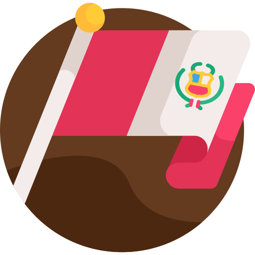
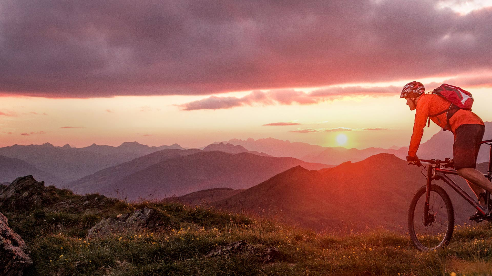

Peru
Trekking
Die Inkas waren ein Geschlecht von Abenteurern, die es wagten, in ihrem ganzen Reich neue Wege zu gehen. Können Sie sich vorstellen, so wie sie ganz Peru zu Fuß zu durchqueren? Es gibt Wanderungen für jeden Laufstil, Rhythmus und Geschmack, aber alle sind eine Herausforderung und versprechen Abenteuer, die Ihnen für immer in Erinnerung bleiben werden.

Radfahren
Auf Radwegen voller Geschichte dahinstrampeln und dabei die intensive Schönheit der Kordillere von Urubamba genießen das ist im heiligen Tal möglich. Ein unvergessliches Erlebnis, das Sie von Maras nach Moray durch grüne Ebenen führt, die nur zu Fuß oder mit dem Rad zu erreichen sind.
